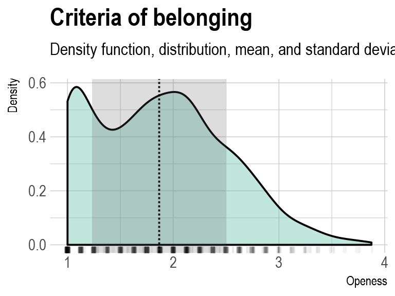
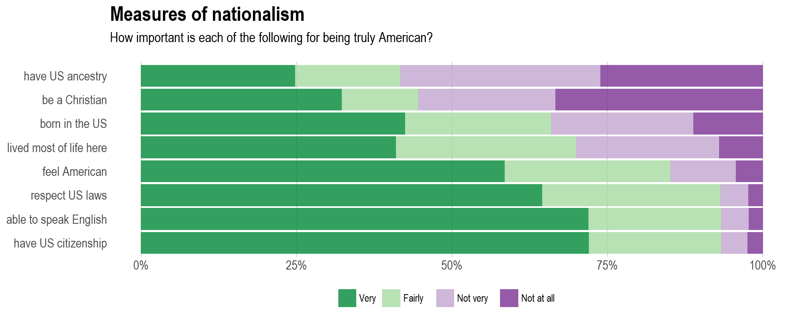
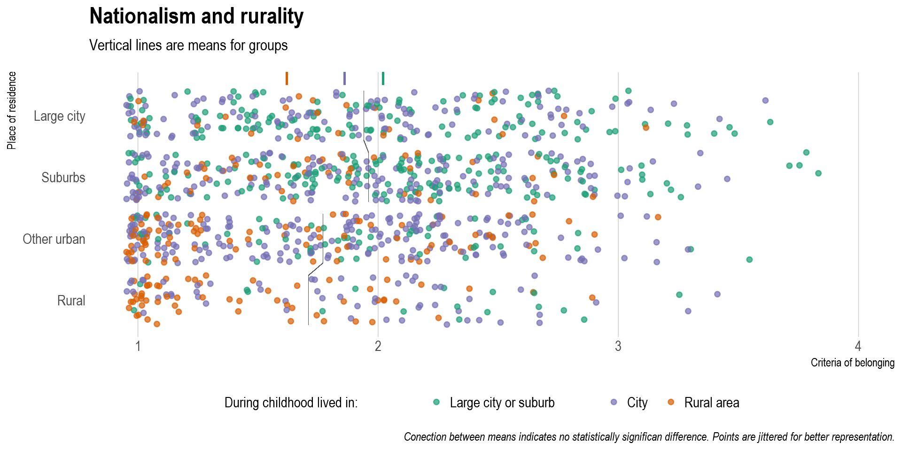
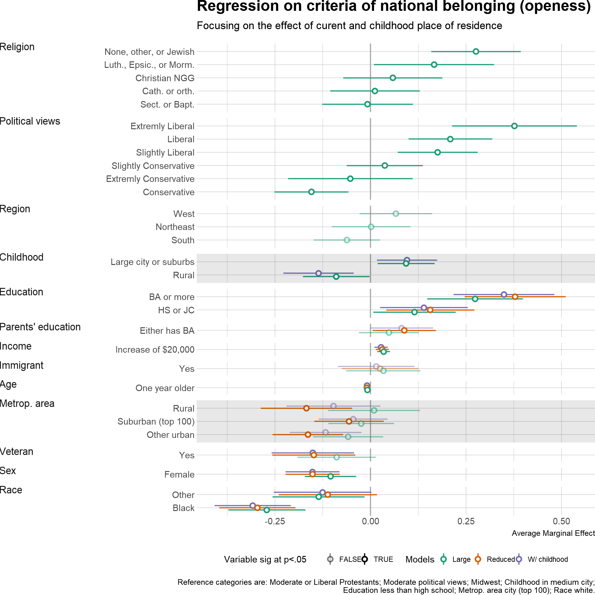

Summary of MA paper American Nationalism and the ‘Curse of Rurality’: Urban-Rural Differences and the Notion of National Belonging, 2017, SIU Carbondale. Full paper can be accessed at OpenSIUC.
It has often been claimed that either American nationalism does not exist or it is quite different from others, most notable European ones. However, body of literature shows that, although not lacking in uniqueness, it is very much similar to other nationalisms. In this paper I explore the relationship between strength of nationalist sentiments and place where people live (urban/rural), analyzing data from the US General Social Survey for 2014.
Nationalism first develops in 19th century European small urban areas (Hobsbawm 1996), and it would take decades of nation-building modernizing projects for most people to become conscious members of the nation (Weber 1976). However, while closely related to modernity, “its symbolism is drawn from the healthy, pristine, vigorous life of the peasants, of the Volk, the narod” (Gellner 2008), and this central role of rural imagery has been well documented.
Yet, very few contemporary authors further explore nationalism’s relationship with urbanity and rurality (Nairn 1997). It seems that, in the last several decades, not only have nationalist conflicts mostly been rooted within the countryside and nationalist agendas won on elections in them, but that there is a more fundamental connection between nationalism and rurality. Existence of stronger national sentiments among people living in rural areas would thus indicate a pressing need for theories of nationalism to revisit this relationship, both in context of historical development of “post-modern” times and effect of nationalism’s imagery on its practice.
Measuring national identity, or nationalism, can be rather complicated due to its multidimensionality and overlap with similar concepts. Malesevic argues that in their totality they are “concepts of limited use in empirical research”, (Malesevic 2006). This conceptual cacophony means that ways in which it is measured varies greatly—from rather simple models to latent class analysis, from theoretically imposed categories, to the ones driven by data. Most comprehensive data on nationalism, from International Social Survey Program, has served for dozens of different approaches in studying national identity, nationalism, or its strength, over the period of the last two decades.1

A useful proxy of nationalism is criteria of belonging—its “openness” or “restrictiveness”. Namely, boundaries of the group are key in defining what nation is and who belongs to it. But they are not solid, they vary across time, nations, and within nations—especially across socio-demographic characteristics. Thus, understanding the conceptions of criteria of national membership may be vital for understanding nationalism Bonikowski (2016). Furthermore, it could be argued that it is a fundamental concept that indicates more nationalistic attitudes.
Nationalism, or more precisely—criteria of membership in the nation—is measured by eight questions from the survey. Respondents identified how important are individual items in determining if someone is “truly American”. Questions are highly correlated, and principal component analysis allows us to group them into index: criteria of belonging. Lower value denotes more restrictive, or closed, understanding of American national belonging, while the highest theoretical value of 4 indicates completely open notion. Almost 85% of the sample scores less than 2.5 on it, meaning that Americans have fairly restrictive notion of who “truly belongs” to the nation.

Distinguishing urban from rural areas might be similarly difficult endeavor, especially in the context of a complex issue affected by many different social and historical factors, as nationalism is. Using publicly available GSS data and relying on existing area classifications is additional challenge. But 2014 survey has an effective variable which can also be used as an approximation of the studied relationship: self reported place of childhood. Participants were asked to identify the place in which they lived until the age of 16 as either rural area, medium, or large city.

Bivariate analysis shows that there is statistically significant difference in nationalism between persons living in large cities or suburbs, on one side, and persons living in other areas of the country, including rural ones. As expected, persons living in more urban areas have also more open notions of national belonging. This effect is even more evident when we focus at the place of childhood, where persons who grew up in large cities or suburbs have the most open criteria of belonging, followed by persons from cities, and lastly those who grew up in rural areas have rather restrictive vision of who can “truly” be American.
It is worth noting that criteria of belonging depends upon individual’s age, sex, race, religion, education, veteran status, parents’ education, family income, region, and political views. Somewhat surprising, there is no statistically significant difference between first and second generation immigrants compared to those who are not.
To control for these other factors, parameters for three different OLS models are estimated to determine what is the true effect of rurality.

First, once we control for basic demographics (except religion, political views, and region), the effect of place of residence remains significant. However, after we include the place where persons grew up until the age of 16, current place of residence does not reach level of statistical significance. On the other hand, place of childhood still has impact on nationalism. Finally, including religion, political views, and region into the model does not drastically alter the situation. Persons who grew up in large city or adjacent suburbs have more open notion of who can be “truly American”, compared to those who grew up in medium cities. Similarly, growing up in rural areas, compared to medium cities, influences more close understanding of “true” belonging to American nation.
Primary finding of this research is that once we control for a variety of socio-demographic factors, notion of criteria of national belonging ceases to differ between persons living in urban and rural America. Still, where persons lived in their childhood affects it in the expected direction.
Main claim is that dialectics of urbanity and rurality is fundamental for further understanding of nationalism. Better operationalization of both nationalism and urban/rural places, as well as analyzing data from other countries, could provide a more determinate conclusions regarding this relationship. Especially in the context of more recent political developments around the world and the re-growth of nationalism, revisiting the study of space and environment, along with its cultural characteristics, can prove fruitful.
Research uses publicly available General Social Survey data, from National Opinion Research Center at University of Chicago. It is nationally representative survey of adults living in American households, who speak English or Spanish.
Analysis was conducted using R language mostly relying on car package, ggplot2 and hrbrthemes for visualization, and knitr for presentation.
Bivariate analysis consisted of ANOVA, Tukey’s HSD, t-tests, and correlations. While six OLS regression models were constructed for thesis, three most relevant are presented here.
Greatest concern is non-normality of dependent variable, however, given the size of the sample and lack of other issues it is acceptable. Skepticism regarding heteroskedasticity (visually inferred) was proved misleading using one sided Breusch-Pagan test. Collinearity among variables was not identified, neither visually nor using VIF scores. Global validation procedure confirms that assumptions for heteroskedasticity, link function, and kurtosis are acceptable, while assumption for skewness is not satisfied.
Full replication code (from the paper) is in github repository.
Bonikowski, Bart. 2016. “Nationalism in Settled Times.” Annual Review of Sociology 42: 427–49.
Gellner, Ernest. 2008. Nations and Nationalism. Second edition. Ithaca, NY: Cornell University Press.
Hobsbawm, Eric. 1996. The Age of Revolution 1789–1848. New York: Vintage Books.
Malesevic, Sinisa. 2006. Identity as Ideology Understanding Ethnicity and Nationalism. Basingstoke: Palgrave Macmillan.
Nairn, Tom. 1997. Faces of Nationalism: Janus Revisited. London: Verso.
Weber, Eugen. 1976. Peasants into Frenchmen: The Modernization of Rural France, 1870–1914. Stanford, CA: Stanford University Press.
Data used in this research is from nationally representative 2014 GSS ISSP module. Cases where persons indicated “I am not American” were excluded, sample was reduced for regression, and one outlier removed, resulting in the sample size of 1071.↩